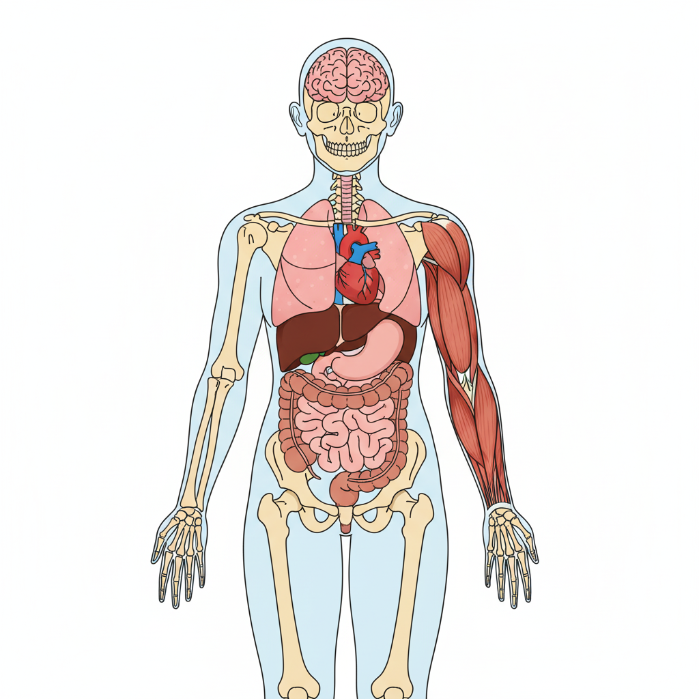
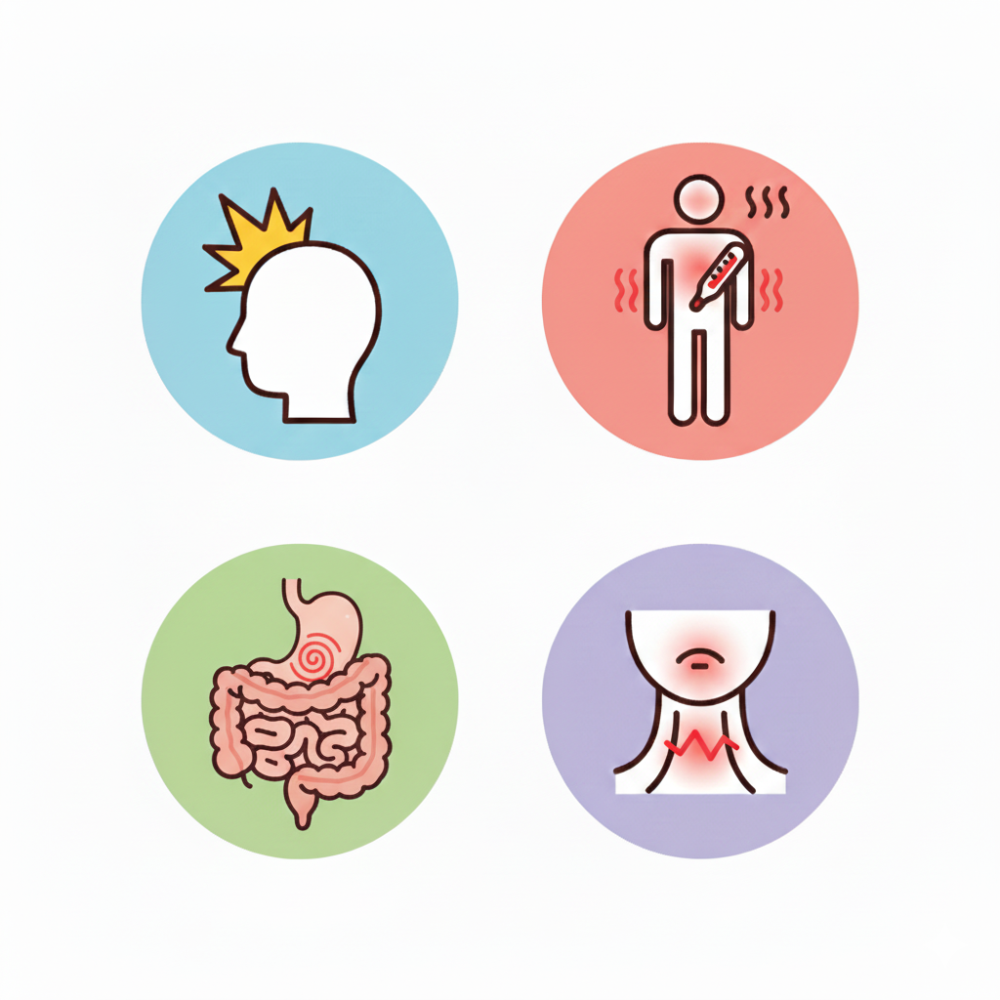
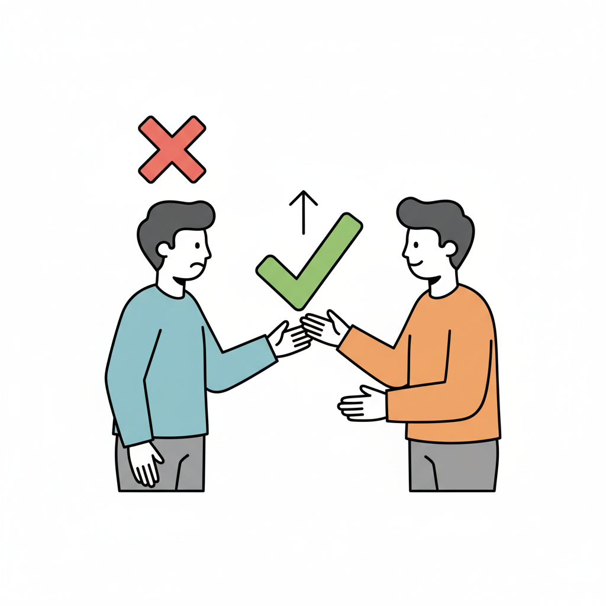
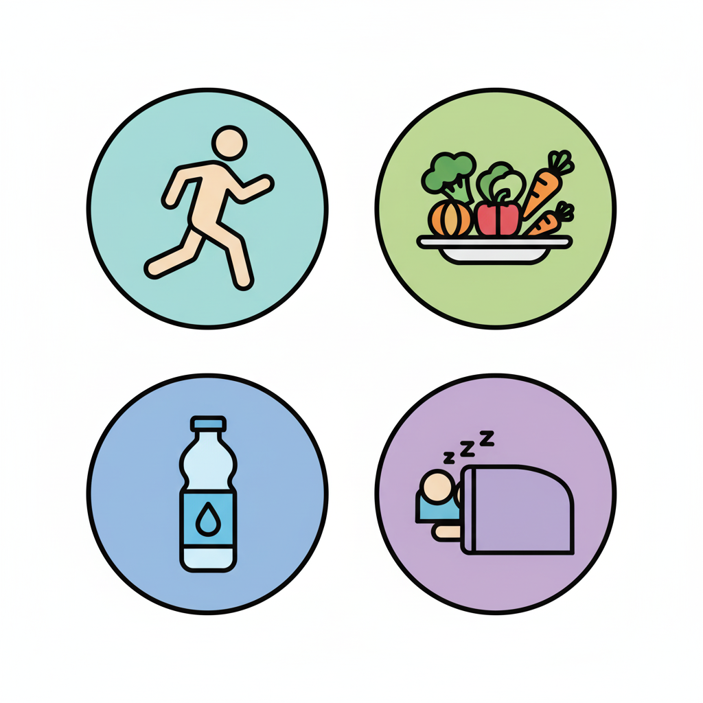
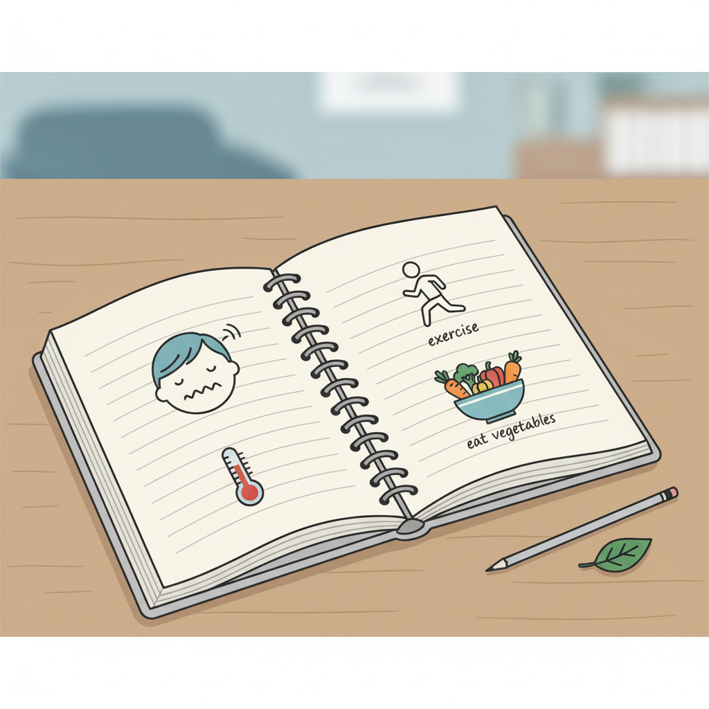

Feeling Good and Staying Healthy
By the end of this lesson, students will be able to:
Students will follow simple commands to identify and name different body parts.
Introduction:
"Hello everyone! Today, let's learn how to talk about our bodies and how to stay healthy!"
大家好！今天我們來學習如何談論我們的身體以及如何保持健康！

Interactive activities to practice talking about health issues and giving advice.
Students will learn vocabulary for common ailments and use it to describe how they feel.
Vocabulary: Common Ailments & Feelings:

Activity: "Describe the Symptom."
Show flashcards of ailments. Students must describe the problem using the vocabulary. Example: "I have a headache." "I feel dizzy."
Students will practice giving health advice using "should" and "shouldn't".
Phrases for Giving Advice:

Activity: "What Should I Do?"
Students present a health problem (e.g., "I have a terrible cold."). Other students take turns giving advice using "should" and "shouldn't".
Students will share a healthy habit they have or want to adopt.
Examples:
"I think everyone should drink more water." (我認為每個人都應該多喝水。)
"To stay healthy, you should eat lots of vegetables." (為了保持健康，你應該多吃蔬菜。)

Students will describe a past health issue and the advice they received, or write about their own healthy habits.
"Choose one of the two topics below and write 5-7 sentences."
Write about a time you were sick. What was the problem? What did someone say you should do?
My Health Story: 我的健康故事
Describe a few things you do to stay healthy. Use "should" and "shouldn't" to give advice to others.
Healthy Habits: 健康習慣

"Please write your entries on a separate piece of paper or in your notebook."
請將你的作業寫在一張獨立的紙上或筆記本裡。